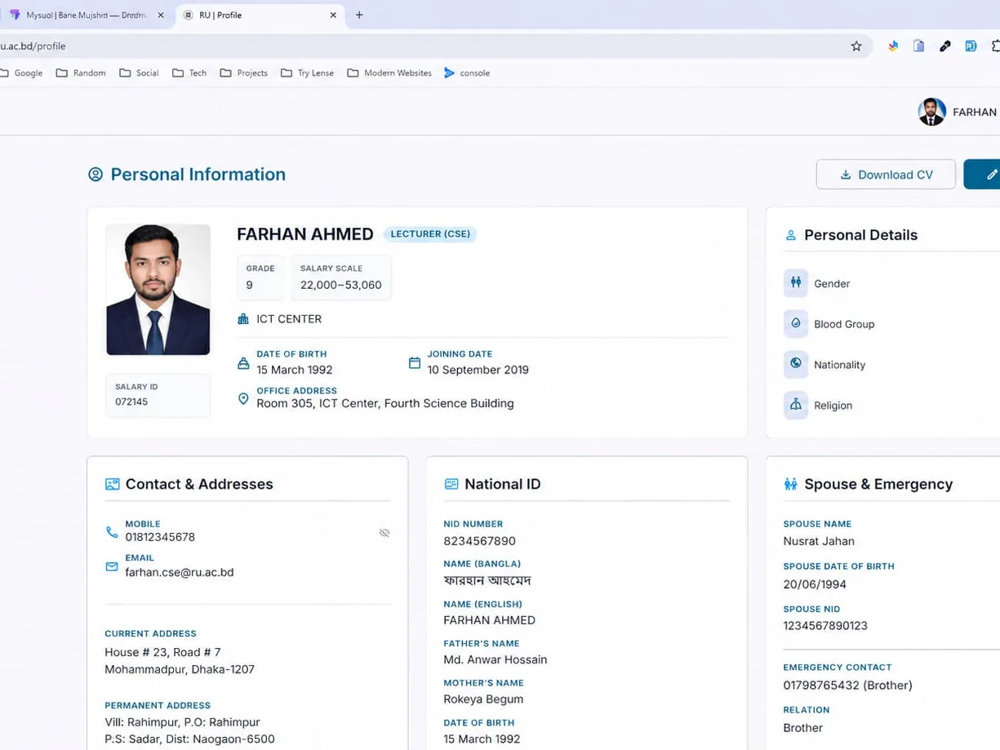

Rajshahi University Employee Profile System

A full-stack profile, payroll and directory platform that replaced a decade-old legacy system for 4,586 University of Rajshahi employees — teachers, officers and support staff. Every employee owns and maintains their own professional profile, while the university's administrative offices use the same data for payroll, establishment records, an internal directory and a public staff directory. It ships as a Laravel REST API with a Blade super-admin panel, a React + TypeScript SPA for employees and administrative roles, and a key-gated read-only contact API consumed by the university's mobile app.
Problem
The legacy system held 4,586 employees but only 1,240 had ever filled in a profile — 3,346 people, 2,461 of them actively employed, were effectively invisible to it. Nobody could update their own record; every correction went through an office, on paper. Payroll lived in Excel, printed and distributed by hand, with no per-employee payslip access and no audit trail. The data itself had drifted: 279 distinct job-designation strings in the database against 221 in the payroll spreadsheet, with only 134 matching — the same role spelled four different ways across two sources of truth.
Solution
Not a rewrite of the old thing: give every employee self-service ownership of their own data, give each administrative office exactly the slice of authority it needs, and migrate a decade of messy real data without losing or silently corrupting a single person's record. A Laravel API backs five scoped administrative roles and a React SPA where employees maintain their own profile, export a CV and download their payslips — while the payroll spreadsheet moves through an explicit, auditable state machine that can never write straight to an employee record.
By the Numbers
Key Features
- Employee self-service profiles — academic and employment history, research, publications, awards, memberships, contacts and scholarly links, with drag-to-reorder section ordering
- One-click A4 CV export in two variants — a public version and a private full version carrying date of birth, addresses and non-public contacts
- Monthly payslip download, released only once the payroll batch reaches published state, with every download recorded
- TOTP two-factor authentication with QR-code enrolment for employees
- Five scoped administrative roles — Accounts, Establishment, Duty admin, Public relations and Super-admin — each limited to its own slice of authority
- Full payroll pipeline: 25 earnings and 60+ deduction columns imported from Excel, reviewed as a diff, approved and published as separate deliberate actions
- Salary PDFs reproducing the legacy bill layout exactly, including the Bangla amount-in-words line and a per-designation-type masthead
- Public directory — offices, faculties, departments, halls and institutes, with shareable individual profiles and no login required
- Key-gated read-only contact API serving the university's mobile app, with keys issued, monitored and revoked from the admin panel
Challenges & Engineering Deep Dive
A Payroll Import That Cannot Corrupt an Employee Record
Applying a payroll spreadsheet straight to employee records would mean one bad file overwrites 4,000 profiles. Wrapping it in a transaction only narrows the window — it does not give anyone a chance to look at what is about to be written.
How I solved it: Staging is separated from application. Import runs as a chunked background job that writes only to a staging table, never to employee records. The review step then shows a diff — which profiles would change, which employees are new, which rows could not be matched to a person, which carry discrepancies. Unmatched rows are searched and matched to an employee by a human before the batch can be published. Approving applies the reviewed diff; publishing — making payslips visible to employees — is a third, separate action.
↳ unmatched rows are matched by hand during review, and a batch that still has them cannot be published
Every stage validates the batch's current state and returns a specific, human-readable message for each wrong-state transition rather than a generic error, so the operator always knows which step they are on and what is blocking the next one.
The Migration Was Iterating Over the Wrong Table
The first version of the migration command looped over the legacy profiles table — the natural choice, since that is where all the profile content lives. It migrated 1,240 people and looked like it worked.
How I solved it: The legacy employees roster held 4,586 rows; the profiles table only held entries for people who had ever bothered to fill one in. The migration was silently excluding 3,346 people, 2,461 of them currently employed. Inverting the driver fixed it — iterate the full employee roster and left-join profile content where it happens to exist, so everyone gets a record and profile content is optional enrichment rather than the entry condition. The lesson generalises: when migrating, ask what the authoritative set of entities is. It is rarely the richest-looking table.
Reconciling 366 Job Designations That Were Really ~230
279 unique designation strings in the legacy database, 221 in the payroll Excel, only 134 matching case-insensitively. Creating them all naively would have produced a designation table full of near-duplicates — 'MLSS ( CLEANER)' beside 'MISS (CLEANER)', 'SECURITY GUARD ( LD ASSISTANT EQV.)' beside 'Security Guard (Lda Eqv.)'.
How I solved it: A three-tier reconciliation funnel — normalising punctuation and spacing caught 22, expanding abbreviations (LDA → LD ASSISTANT, EQV → EQUIVALENT, SR → SENIOR) caught 11, and edit distance within 25% produced 13 candidates that I reviewed by hand, accepting 6 and rejecting 7. Tier three is where it mattered: pure edit distance produces confident false positives, because different roles share long common suffixes. UD and LD are different pay grades, not a typo; deputy chief engineer (electrical) and (civil) are different disciplines. Final result — 72 of the 232 mismatches were genuinely the same role written inconsistently, and the remaining 136 are legitimately distinct roles. Fuzzy matching is a candidate generator, not a decision maker, and on payroll data affecting real people's grades the honest answer beats a clean-looking forced merge.
A "Hang" That Was Actually a 1.7 MB Console Line
The migration would freeze for 30+ minutes on one specific record. No CPU spike, no error, no progress — every symptom of a deadlock and none of the causes.
How I solved it: One employee's biography, pasted from Word, was 1.7 MB. The insert failed, and the database exception embedded the entire failed SQL statement in its message; the command printed that message verbatim. Symfony Console is not built to render a megabyte-long single line, so the process only appeared frozen while it wrapped and painted it. The fix was two-part: cap every stored and printed error message across all import commands to the exception class plus a couple of hundred characters, then remove the underlying cause by widening the biography column from TEXT (65 KB) to MEDIUMTEXT (16 MB) — truncating someone's biography is visible data loss. "Hung process" and "slow process" have different fixes; trace before you optimise, and never print an untrusted, unbounded string to a terminal.
Real Data Is the Specification
Six of the eleven significant problems on this project were invisible until the code ran against 4,586 real rows. Schema decisions made against sample data turned out to be hypotheses, and each failure needed its own judgement call about whether losing data was acceptable.
How I solved it: Publication and resource URLs were widened from varchar(255) to TEXT, because real ResearchGate and ScienceDirect signed URLs exceed it and a truncated URL is broken rather than shortened. The short education summary was truncated to 255 instead, because it is a summary field by design. A degree passing year of 1889 — outside MySQL's YEAR range — was validated and nulled rather than allowed to kill a 4,586-row run. Legacy created/modified columns looked like Unix timestamps but held values like 2134, which would have written January 1970 across the dataset; they were ignored entirely, since a missing date is honest and a wrong date is a lie that survives forever. The principle: truncate when the field is a summary, widen when truncation destroys meaning, null when the value is simply invalid — and never let one bad row kill the run.
Designing for the Abort, Not the Happy Path
Two legacy columns carried what was nominally the same identity — one a bare payroll number, the other the same number with a department-code prefix bolted on. Since the office is already a separate foreign key in the new schema, the prefix was both redundant and ambiguous. The importer writes upserts, so a collision on that key would quietly merge two human beings into one row.
How I solved it: Standardise on the bare payroll number, and write an explicitly irreversible normalisation migration that refuses to run if any two employees would collide — a human resolves those first. The same defensive stance runs through the whole importer: before writing anything, it audits the full legacy key set and aborts on collisions or unresolvable IDs. The most valuable line in the migration is the one that refuses to run; a migration that stops and tells a human "these two people claim the same payroll number" is worth more than one that finishes.
The same instinct decided what not to automate. The legacy system had two roles, the new one has five scoped ones, and no sound automatic mapping exists between them — a wrong guess hands someone payroll access they should not have. So roles are not migrated at all; they are assigned by hand. And where the new schema required a government identity field the legacy system had never captured, the placeholder was derived from an identifier the employee already recognises rather than randomly generated, so the person sees a value they know is wrong and corrects it themselves. When you must invent data to satisfy a constraint, optimise the placeholder for how it gets removed.
Two Guards, Least Privilege, and a Full Audit Trail
The system holds dates of birth, national identity numbers, home addresses and salary figures for 4,586 people, and five different offices need to touch parts of it. Hiding navigation is not access control.
How I solved it: Employees and administrators authenticate through two separate guards — token-based and session-based — so a compromised employee credential cannot reach the admin surface at all. Employees get TOTP two-factor authentication built on a short-lived, single-use, hashed challenge held between the password and OTP steps, and enabling it revokes existing sessions. Payslip access is policy-gated rather than merely hidden: an employee can reach only their own statement, only after the batch is published, and every download is recorded. The public CV export omits date of birth, addresses and any contact the employee has not marked visible, while the complete version is reachable only through an authenticated self-service route. Machine-to-machine access is key-gated at the middleware layer with per-key last-used time and origin, and a model-wide activity log records before-and-after values with causer attribution that distinguishes an administrator from an employee — with credentials and two-factor secrets explicitly excluded from what gets logged.
Architecture Enforced by Tooling, Not by Style Guide
The SPA is feature-sliced across 19 modules. Layering rules that live in a style guide erode quietly — four components had already reached past their feature's API layer and called the HTTP client directly.
How I solved it: The boundaries are enforced by lint. An eslint-plugin-boundaries configuration plus a no-restricted-imports rule makes it an error for a page or component to import the axios client directly — every network call has to go through its feature's api module. The four pre-existing violations are what motivated the rule. Routing is split the same way: every route is its own lazy chunk importing the page module directly rather than a feature barrel, because a barrel import would make every page re-exported from it share one chunk — an employee opening their payslip list would also download the administrator review UI they cannot use. React, React-DOM and React Router sit in separate vendor chunks so an application deploy does not invalidate ~140 KB of vendor code for returning visitors.
What's Public, and What Isn't
The live link above opens the public directory — offices, faculties, departments, halls and institutes, with individual staff profiles on shareable links and no login required. That surface is deliberately public; everything behind it is not. The authenticated side holds identifiable employee records — dates of birth, national identity information, home addresses, photographs and salary figures — reachable only through institution-provisioned accounts, so there is no demo login to hand out, and the screenshot above is the employee profile view rendered with seeded demo data rather than a real record. What can be shared instead is the reasoning: every non-obvious decision above lives in an internal decision log recording its rationale, its trade-off and its consequence, including the questions deliberately left unresolved. When the system owner chose to keep a handful of non-conforming legacy records exactly as the old database had them, prioritising fidelity over tidiness, the documented consequence — that a future import expecting the normalised format will skip those rows — is now recorded as expected behaviour rather than discovered in six months by someone who "fixes" it and silently breaks fidelity to the source of truth.